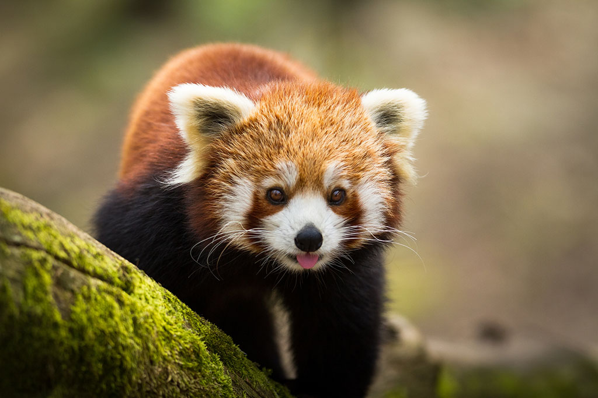
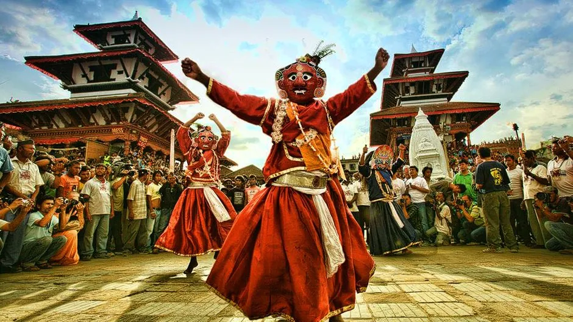
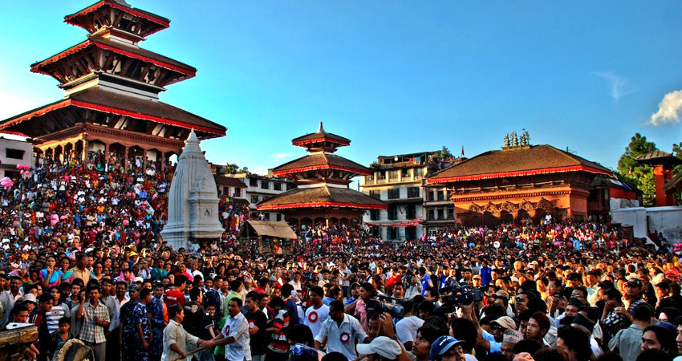
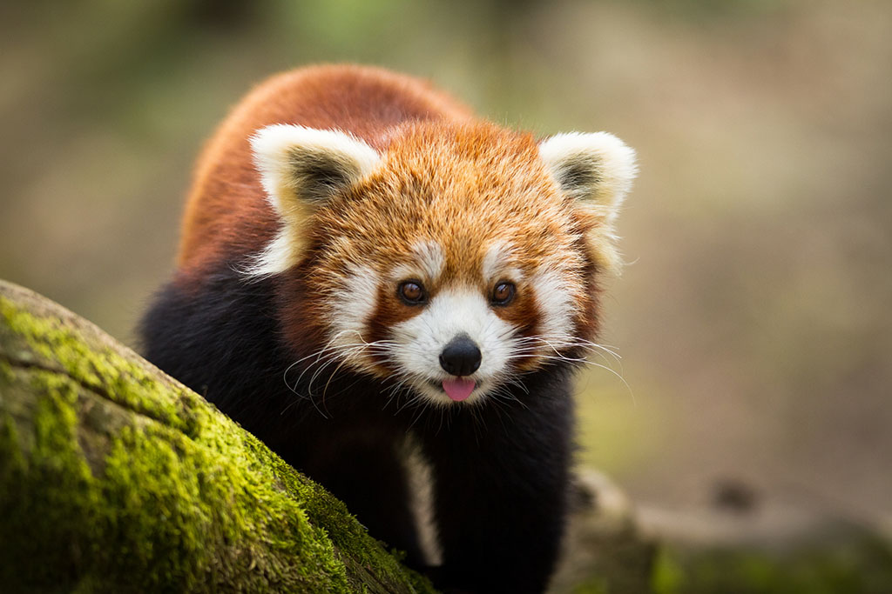
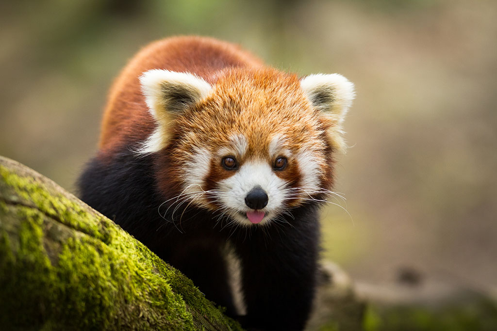

Nepal, a land of captivating beauty and enduring traditions,
beckons you to embark on an unforgettable journey of exploration
and discovery. Immerse yourself in the rich tapestry of Nepalese culture,
where ancient temples and bustling marketplaces intertwine, and the air is
alive with the sounds of lively festivals and traditional music. Embark on
exhilarating treks through the Himalayas, where breathtaking vistas await around
every bend, or embark on a wildlife safari in search of exotic creatures like the
elusive Bengal tiger. Whether you seek spiritual enlightenment, cultural immersion,
or adventurous pursuits, Nepal promises an enchanting experience that will forever leave its mark on your soul.
Destinations
Himalayan Majesty
Nepal is home to eight of the world's 14 highest peaks, including Mount Everest, the highest point on Earth.
The Himalayas offer breathtaking landscapes and trekking opportunities for adventure enthusiasts.
Trekking and Hiking
Nepal is a trekker's paradise with a variety of trails catering to different
skill levels. The Annapurna Circuit, Everest Base Camp trek, and Langtang Valley trek are
among the most popular routes.
Rich Cultural Heritage
Explore ancient cities, temples, and monasteries in places like
Kathmandu, Bhaktapur, and Patan. The architecture and art reflect the country's diverse cultural
and religious history.
Unique Wildlife
The country is home to diverse wildlife, including Bengal tigers,
one-horned rhinoceroses, red pandas, and a variety of bird species. Chitwan National Park
and Bardia National Park are popular for wildlife safaris.

Spiritual Retreat
Nepal is a deeply spiritual country with a blend of Hinduism and Buddhism.
Visit sacred sites like Pashupatinath, Boudhanath, and Lumbini (the birthplace of Buddha) for a
spiritual and serene experience.
Adventure Sports
Besides trekking, Nepal offers a range of adventure activities such as
white-water rafting, paragliding, zip-lining, and mountain biking, making it a haven for
thrill-seekers.
Cultural Diversity & Festivals
Experience vibrant and colorful festivals throughout the year, such as Dashain,
Tihar, and Holi. These celebrations provide a unique insight into Nepalese culture and traditions.


Local Cuisine
Enjoy the diverse and flavorful Nepalese cuisine, which includes momos (dumplings),
dal bhat (lentil soup with rice), and a variety of curries. Don't forget to try the local tea,
called chiya.


 
